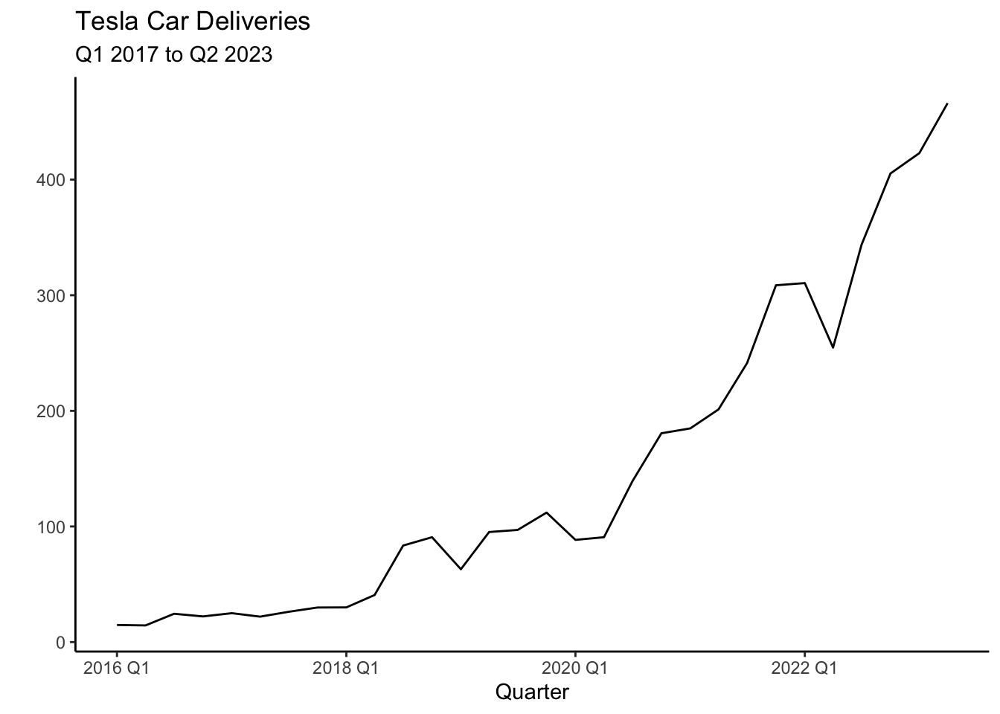
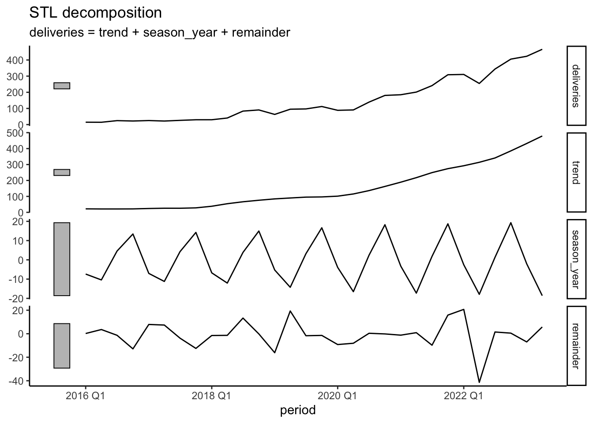
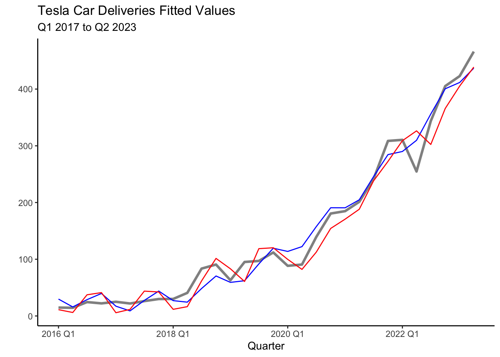
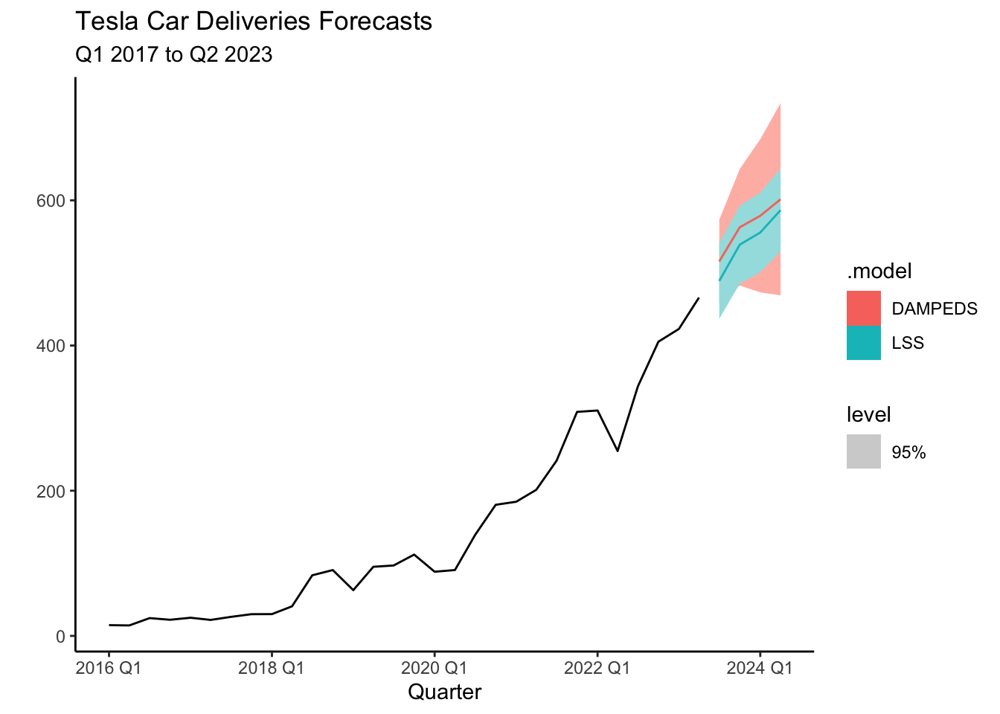
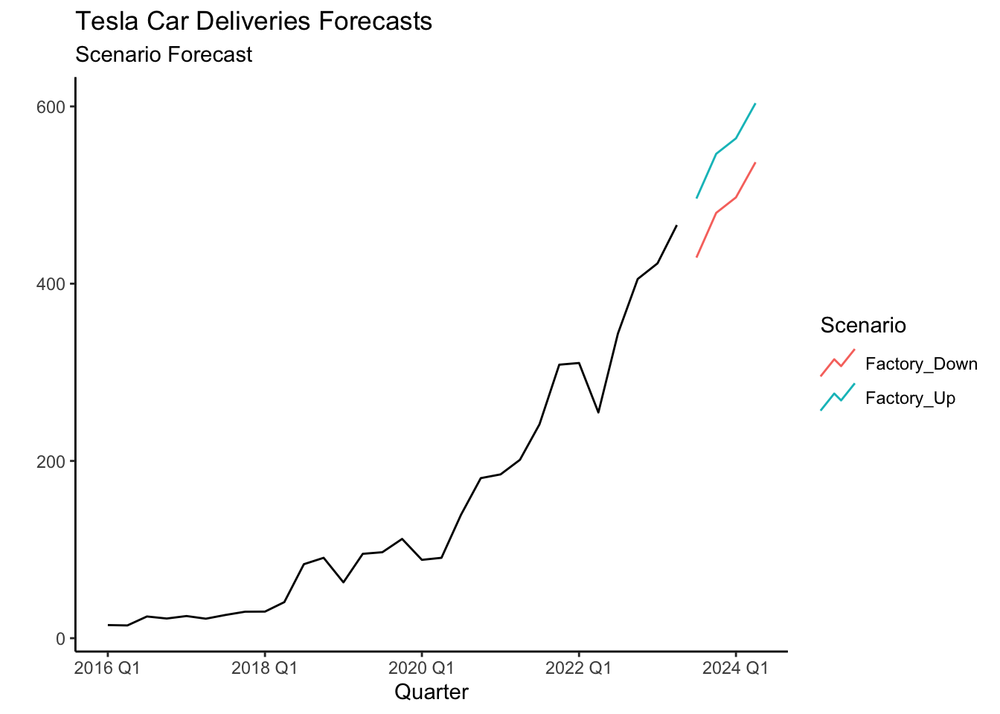
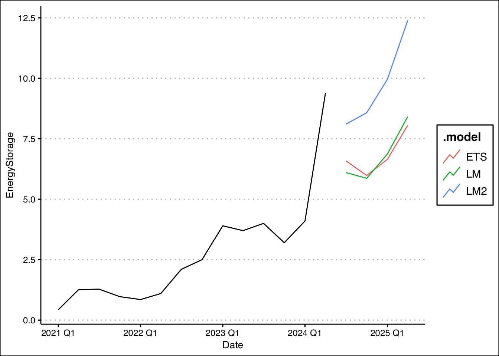
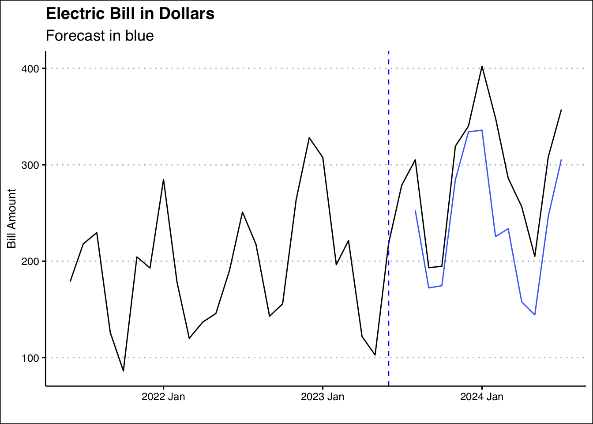
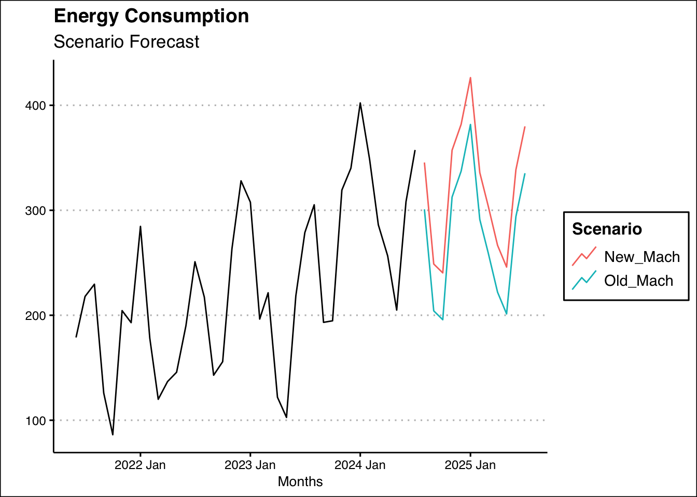
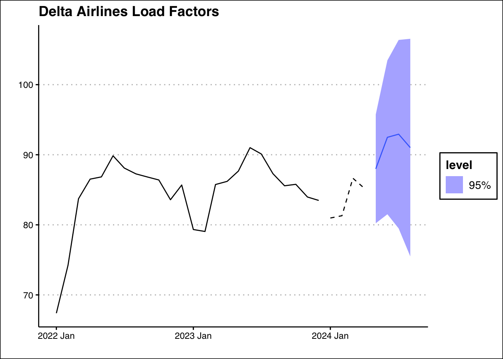

library(fpp3)
# Create tsibble
tesla<-tsibble(
period=yearquarter(c("2016:Q1","2016:Q2","2016:Q3","2016:Q4",
"2017:Q1","2017:Q2","2017:Q3","2017:Q4",
"2018:Q1","2018:Q2","2018:Q3","2018:Q4",
"2019:Q1","2019:Q2","2019:Q3","2019:Q4",
"2020:Q1","2020:Q2","2020:Q3","2020:Q4",
"2021:Q1","2021:Q2","2021:Q3","2021:Q4",
"2022:Q1","2022:Q2","2022:Q3","2022:Q4",
"2023:Q1","2023:Q2")),
deliveries=c(14.8,14.4,24.5,22.2,
25,22,26.2,29.9,
30,40.7,83.5,90.7,
63,95.2,97,112,
88.4,90.7,139.3,180.6,
184.82,201.25,241.3,308.6,
310.5,254.7,343.8,405.3,
422.9,466.1),
index=period # This is the time variable
)6 ETS
In this section we will be introducing and applying the Error, Trend, Seasonality (ETS) model. This model provides a flexible approach for modeling and forecasting time series data by incorporating components for error, trend, and seasonality. The ETS model allows different combinations of these components to be included in the model based on the characteristics observed in the data.
6.1 ETS Components
ETS models build on simple exponential smoothing (SES). The basic idea behind SES is to assign more weight to recent observations and gradually decrease the weights as the observations become older. The model emphasizes the most recent data points and gives less importance to older observations.
Mathematically, the simple exponential smoothing model can be defined as:
where \(\hat{y}_{t+h}\) is the forecast of period \(t+h\), \(l_{t}\) is smoothed value of the series at time \(t\), \(y_t\) is the value observed at the current time period \(t\) and \(\alpha\) is the smoothing parameter. Note that when \(\alpha\) is equal to one, the forecast equation is equivalent to the Naive model, and when \(\alpha\) is equal to zero, the smoothing equation is always \(l_{t-1}\).
The SES model is useful when forecasting series that have no trend or seasonality. The SES model can easily be modified to account for trend and seasonality by adding additional components. For example, the Holt’s linear trend method adds a component to account for a linear trend, the damped trend methods flatten the trend some time into the future, and the Holt-Winters model accounts for seasonality. The collection of models generated by adding different components are summarized as Error, Trend, and Seasonality (ETS) models. We apply the ETS model to the deliveries of the electric car company Tesla in the sections below.
6.2 Tesla’s Deliveries
Deliveries are a carefully watched number by Tesla shareholders and are the closest approximation of sales disclosed by the company. Additionally, Tesla’s deliveries are closely followed due to their impact on financial markets, the EV industry, innovation and disruption, production efficiency, and the growth of the EV market. The numbers serve as a key performance indicator for Tesla’s success and provide insights into the broader trends in the electric vehicle industry. Can we use the ETS model to forecast Tesla’s deliveries?
6.3 The Data
The data can be found here Tesla. Below is code that inputs the data as a tsibble in R.
As you can see the tsibble is created with the tsibble() function included in the fpp3 package. The yearquarter() function from the lubridate package is used to coerce the period data to a date. The time variable is then specified via the index parameter. The code below creates the plot of Tesla’s deliveries using the autoplot() function.
tesla %>% autoplot(.vars=deliveries) + theme_classic() +
labs(title= "Tesla Car Deliveries",
subtitle = "Q1 2017 to Q2 2023") +
xlab("Quarter") + ylab(" ")
The most striking aspect of Tesla’s deliveries is the exponential trend. There also seems to be a seasonal component, with relatively higher production Q4 versus the other quarters. These characteristics will be adopted by the ETS model to forecast the series. Below we can see the STL decomposition that confirm these characteristics.
tesla %>%
model(STL(deliveries~trend() + season())) %>%
components() %>% autoplot() + theme_classic()
6.4 Models
To model the data and create the appropriate forecasts, we start by generating test and training sets from the available data.
train_tesla<-filter_index(.data=tesla,"2016 Q1"~"2021 Q4")
test_tesla<-filter_index(.data=tesla,"2022 Q1"~"2023 Q2")There is no fixed rule for determining the length of the train and test sets. In this example, it is important to allocate a sufficiently large portion of the data to the training set to capture the underlying seasonality and trend of Tesla’s deliveries. The sets are easily created using the filter_index() function.
Five models will be estimated based on ETS. The first one is the Simple Exponential Smoothing model with additive errors (SES), the Holt model that includes an additive trend (HOLT), a dampened trend model (DAMPED), a damped model with seasonality (DAMPEDS), and finally an algorithmic function that attempts to select the best ETS model (see Hyndman (2021), Chapter 8). Along with these five models two more models are set forth. The first one is a simple least squares model (LS) and the second one is a quadratic model with seasonality dummies (LSS).
Model selection will be done via cross validation. Recall, that the the stretch_tsibble() function reshapes the tsibble to accommodate for cross validation. The .init parameter sets the first eight observations to estimate our initial model and the .step argument increases the training set by four. Cross validation is done four periods ahead (a year) and accuracy measures are created by comparing forecasts to the test set.
Each component of the ETS model can be included as either multiplicative (\(M\)) or additive (\(A\)). The trend component can be assigned to be damped (\(Ad\) or \(Md\)). If the component is to be omitted from the model, None (\(N\)) is specified. Below is the code to estimate the models and the results of the cross validation.
library(gt)
train_tesla %>% stretch_tsibble(.init = 8, .step=4) %>%
model(
SES=ETS(deliveries ~ error("A") + trend("N") + season("N")),
HOLT=ETS(deliveries ~ error("A") + trend("A") + season("N")),
DAMPED=ETS(deliveries ~ error("A") + trend("Ad") + season("N")),
DAMPEDS=ETS(deliveries ~ error("A") + trend("Ad") + season("A")),
ALGO=ETS(deliveries),
LS = TSLM(deliveries ~ trend()+I(trend()^2)),
LSS = TSLM(deliveries ~ trend()+I(trend()^2)+season()))%>%
forecast(h = 4) %>%
accuracy(tesla) %>% select(-"ACF1") | Cross Validation Models | ||||||||
|---|---|---|---|---|---|---|---|---|
| .model | .type | ME | RMSE | MAE | MPE | MAPE | MASE | RMSSE |
| ALGO | Test | 40.231 | 57.608 | 45.297 | 23.474 | 28.654 | 1.042 | 0.990 |
| DAMPED | Test | 18.701 | 55.497 | 44.900 | 8.033 | 32.803 | 1.033 | 0.954 |
| DAMPEDS | Test | 21.011 | 47.198 | 38.590 | 9.399 | 23.120 | 0.888 | 0.811 |
| HOLT | Test | 15.122 | 57.200 | 46.728 | 4.127 | 34.811 | 1.075 | 0.983 |
| LS | Test | 11.657 | 43.208 | 37.200 | 2.527 | 28.375 | 0.856 | 0.742 |
| LSS | Test | 9.739 | 41.890 | 36.739 | 1.641 | 28.748 | 0.845 | 0.720 |
| SES | Test | 40.991 | 58.160 | 45.750 | 23.988 | 28.824 | 1.053 | 0.999 |
The accuracy measures reveal that the DAMPEDS and LSS models perform consistently well. Below, we will continue with the DAMPEDS and LSS models as the trend seems to be exponential and there seems to be evidence of seasonality. These model are estimated and saved into an object called fit below.
fit <- tesla %>%
model(
DAMPEDS = ETS(deliveries ~ error("A") + trend("Ad") + season("A")),
LSS = TSLM(deliveries ~ trend()+I(trend()^2)+season())
)If one is interested in retrieving the model coefficients, one can use the tidy() (or coef()) function. Below the function is used along with the fit object to retrieve the coefficients of the Least Squares model with seasonality:
tidy(fit) %>% filter(.model=="LSS") %>%
select(-".model")| LSS Model Coefficients | ||||
|---|---|---|---|---|
| term | estimate | std.error | statistic | p.value |
| (Intercept) | 36.43 | 13.97 | 2.61 | 0.02 |
| trend() | −7.33 | 1.92 | −3.82 | 0.00 |
| I(trend()^2) | 0.70 | 0.06 | 11.62 | 0.00 |
| season()year2 | −8.63 | 10.91 | −0.79 | 0.44 |
| season()year3 | 8.07 | 11.35 | 0.71 | 0.48 |
| season()year4 | 21.40 | 11.35 | 1.88 | 0.07 |
The output above, reveals that the seasonal dummy for Q4 is statistically significant at the \(10\)% confirming the seasonal pattern found in the decomposition (Section 6.3). The plot below shows the fit of the models with the blue line representing the LSS model and the red line the DAMPEDS model.
tesla %>% autoplot(deliveries, lwd=1.2, alpha=0.5) + theme_classic() +
geom_line(aes(y = .fitted), col="blue",
data = augment(fit) %>% filter(`.model`=="LSS")) +
geom_line(aes(y = .fitted), col="red",
data = augment(fit) %>% filter(`.model`=="DAMPEDS")) +
labs(title= "Tesla Car Deliveries Fitted Values",
subtitle = "Q1 2017 to Q2 2023") +
xlab("Quarter") + ylab(" ")
6.5 Information Criterion
We can also attempt to select our models via the AIC, AICc, or BIC. The code below summarizes these measure for the models considered.
train_tesla %>%
model(
SES=ETS(deliveries ~ error("A") + trend("N") + season("N")),
HOLT=ETS(deliveries ~ error("A") + trend("A") + season("N")),
DAMPED=ETS(deliveries ~ error("A") + trend("Ad") + season("N")),
DAMPEDS=ETS(deliveries ~ error("A") + trend("Ad") + season("A")),
ALGO=ETS(deliveries),
LS = TSLM(deliveries ~ trend()+I(trend()^2)),
LSS = TSLM(deliveries ~ trend()+I(trend()^2)+season())) %>%
report() %>%
select('.model',"AIC","AICc","BIC")| Model Fit Information Criterion | |||
|---|---|---|---|
| .model | AIC | AICc | BIC |
| SES | 237.16 | 238.36 | 240.69 |
| HOLT | 233.99 | 237.32 | 239.88 |
| DAMPED | 236.37 | 241.31 | 243.44 |
| DAMPEDS | 233.92 | 250.84 | 245.70 |
| ALGO | 223.19 | 224.39 | 226.73 |
| LS | 150.12 | 152.22 | 154.83 |
| LSS | 147.17 | 154.17 | 155.41 |
Here, once again the LSS model seems to perform the best as it provides the lowest values. Among the ETS models, the ALGO model now stands out. This should be of no surprise, as the ALGO model is designed to choose ETS components that minimize the AIC.
6.6 Forecasts
Forecasts are created by using the fit object. We will forecast four quarters ahead using the forecast() function. The code below generates a table with the forecasts.
library(gt)
fit %>%
forecast(h = 4) %>% select(-".model") -> deliveries_fc
deliveries_fc| Forecasts | |||
|---|---|---|---|
| period | deliveries | .mean | .model |
| 2023 Q3 | N(516, 854) | 515.90 | DAMPEDS |
| 2023 Q4 | N(563, 1681) | 562.94 | DAMPEDS |
| 2024 Q1 | N(579, 2895) | 578.73 | DAMPEDS |
| 2024 Q2 | N(602, 4563) | 601.50 | DAMPEDS |
| 2023 Q3 | N(489, 709) | 488.95 | LSS |
| 2023 Q4 | N(539, 754) | 538.99 | LSS |
| 2024 Q1 | N(556, 782) | 555.69 | LSS |
| 2024 Q2 | N(587, 844) | 586.56 | LSS |
Forecasts for the four quarters are shown above, with the corresponding mean. In general, both models predict Tesla will continue its trend and increase its deliveries every quarter. According to the DAMPEDS model, Tesla is expected to deliver about \(516,000\) cars on average. The plot below illustrates the forecasts for both models along with the \(95\)% prediction intervals. The increasing standard deviation for future periods reminds us that longer-period forecasts have even more uncertainty.
fit %>%
forecast(h = 4) %>%
autoplot(tesla, level=95) +
labs(x="Quarter", y="",
title = "Tesla Car Deliveries Forecasts",
subtitle = "Q1 2017 to Q2 2023") + theme_classic()
6.7 Scenarios
On October 9, 2023, Tesla announced 435,059 deliveries for Q3, signaling strong performance. However, during the previous earnings call, Tesla had already cautioned investors about potential delivery impacts due to planned factory shutdowns and upgrades. These shutdowns are necessary to retool production lines for their upcoming vehicles, the Highland Model 3 and Cybertruck. Interestingly, a similar factory shutdown occurred in Q2 2022, giving us valuable historical data to make more precise predictions.
To factor in the effect of these shutdowns, we can introduce a dummy variable, where we assign a value of 1 during shutdown quarters and 0 otherwise. Here’s the code:
tesla<-mutate(tesla,
Down=case_when(
period==yearquarter("2022 Q2") ~ 1,
TRUE ~ 0))The Down variable, captures the impact of factory shutdowns on deliveries. Now, we can incorporate this information into our Time Series Linear Model (TSLM) to estimate Tesla’s deliveries more accurately:
fit <- tesla %>%
model(
LSS = TSLM(deliveries~trend()+
I(trend()^2)+season()+Down)
)Next, let’s explore two possible scenarios: one where Tesla undergoes a factory shutdown and another where production continues uninterrupted. Using the scenarios() function, we can create a dataset for forecasting over the next four periods, simulating both situations:
Down_Scenario <- scenarios(
Factory_Down = new_data(tesla, 4) |>
mutate(Down=rep(1,4)),
Factory_Up = new_data(tesla, 4) |>
mutate(Down=rep(0,4)),
names_to = "Scenario")Finally, we can visualize how each scenario affects Tesla’s future delivery forecasts. Whether Tesla experiences another factory shutdown or keeps production running smoothly, this analysis will help us better understand the potential outcomes.
tesla %>%
autoplot(deliveries) +
autolayer(forecast(fit,new_data=Down_Scenario),
level=NULL)+ theme_classic() +
labs(x="Quarter", y="",
title = "Tesla Car Deliveries Forecasts",
subtitle = "Scenario Forecast") + theme_classic()
The new forecast of 429,404 is now closer to the reported delivery number of 435,059 for Q3 2023 when compared to the analyst consensus estimate of 454,809. For the 4th quarter of 2023 the analyst consensus was 480,500, which is inline with the forecast of the LSS model (about 480,000). The 95% confidence interval of [422,553, 537,182] is retrieved using the hilo() function.
fit %>% forecast(new_data=Down_Scenario) %>%
hilo(95) %>% unpack_hilo("95%") %>%
as_tibble() %>%
select(Down,period,.mean,`95%_lower`,`95%_upper`) %>%
gt() %>% fmt_number(columns=c(.mean,
`95%_lower`,`95%_upper`),
decimals = 2)| Down | period | .mean | 95%_lower | 95%_upper |
|---|---|---|---|---|
| 1 | 2023 Q3 | 429.40 | 373.00 | 485.81 |
| 1 | 2023 Q4 | 479.87 | 422.55 | 537.18 |
| 1 | 2024 Q1 | 497.35 | 439.66 | 555.04 |
| 1 | 2024 Q2 | 537.02 | 480.78 | 593.27 |
| 0 | 2023 Q3 | 496.03 | 451.89 | 540.16 |
| 0 | 2023 Q4 | 546.49 | 500.98 | 592.00 |
| 0 | 2024 Q1 | 563.97 | 517.60 | 610.35 |
| 0 | 2024 Q2 | 603.65 | 554.66 | 652.64 |
6.8 Readings
The main reading for ETS models comes from Chapter 8 of Hyndman (2021). These readings provide a bit more detail on the mathematical background behind each model and a few more applications. For an overview of the moving averages, the Holt, and Winters’ models review Winston and Albright (2019).
6.9 Leasons Learned
In this module you have been introduced to ETS model. Particularly you have learned to:
Use the
model()andETS()functions to estimate the model.Identify when ETS model is superior to other model by using the cross validation and information criterion.
Forecast time series with the ETS model.
6.10 Exercises
Tesla is rapidly expanding its footprint in renewable energy and energy storage solutions, with innovations like the Powerwall, Megapack, and Solar Roof driving the company forward. Tesla’s energy storage systems are gaining traction in both residential and large-scale utility markets, while its vision of Virtual Power Plants (VPPs) is revolutionizing how power is managed and distributed.
Tesla is forecasting strong growth in energy deployment as they continue to scale their products and enter new markets. You have been asked to help forecast Tesla Energy’s deployment for Q4 2024, using historical quarterly data on energy storage and solar deployments from previous years.
You can find data on Tesla’s quarterly energy deployment (in megawatt hours) here: https://jagelves.github.io/Data/teslaE.csv
Forecast Tesla Energy’s deployment for the next four quarters using an ETS model with all additive terms, a TSLM model with linear trend and seasonality, and a TSLM model with quadratic trend and seasonality. Evaluate model performance using the information criterion. Finally, provide your forecast for the upcoming quarters with a graph. What is your expectation for next quarter? Does energy deployment go up or down relative to last quarter? What about when you compare to the same quarter last year?
Suggested Answer
We can use the code below to develop the models:
library(tidyverse)
library(fpp3)
library(ggthemes)
rm(list=ls())
storage<-read_csv("http://jagelves.github.io/Data/teslaE.csv")
storage %>%
mutate(Date=yearquarter(Date)) %>%
as_tsibble(index=Date) -> storage_ts
storage_ts %>%
model(LM=TSLM(EnergyStorage~trend()+season()),
LM2=TSLM(EnergyStorage~trend()+I(trend()^2)+season()),
ETS=ETS(EnergyStorage~error("A") + trend("A") + season("A"))) ->fitTo obtain the information criterion we can use the glance() function:
fit %>% glance() %>% select(.model,AIC:BIC)# A tibble: 3 × 4
.model AIC AICc BIC
<chr> <dbl> <dbl> <dbl>
1 LM 14.4 26.4 18.2
2 LM2 11.2 29.9 15.7
3 ETS 59.1 104. 64.9Forecasts are obtained with the forecast() function setting h=4.
fit %>% forecast(h=4) %>%
hilo(95)# A tsibble: 12 x 5 [1Q]
# Key: .model [3]
.model Date EnergyStorage .mean `95%`
<chr> <qtr> <dist> <dbl> <hilo>
1 LM 2024 Q3 N(6.1, 3) 6.10 [2.716774, 9.486083]95
2 LM 2024 Q4 N(5.9, 3) 5.86 [2.480108, 9.249416]95
3 LM 2025 Q1 N(6.9, 3.1) 6.87 [3.407192, 10.336379]95
4 LM 2025 Q2 N(8.4, 3.1) 8.42 [4.952192, 11.881379]95
5 LM2 2024 Q3 N(8.1, 3.4) 8.11 [4.465782, 11.745374]95
6 LM2 2024 Q4 N(8.6, 4.4) 8.58 [4.472006, 12.680511]95
7 LM2 2025 Q1 N(10, 5.1) 9.97 [5.531357, 14.401500]95
8 LM2 2025 Q2 N(12, 6.9) 12.4 [7.256176, 17.535049]95
9 ETS 2024 Q3 N(6.6, 3.1) 6.59 [3.114998, 10.060041]95
10 ETS 2024 Q4 N(6, 3.1) 5.98 [2.509588, 9.454631]95
11 ETS 2025 Q1 N(6.7, 3.1) 6.65 [3.180104, 10.125147]95
12 ETS 2025 Q2 N(8.1, 3.1) 8.06 [4.584554, 11.529598]95Finally, the graph is obtained using the autoplot() and autolayer() functions:
fit %>% forecast(h=4) %>% autoplot(level=NULL)+
autolayer(storage_ts,EnergyStorage) + theme_clean()
Forecast suggest that energy deployment will go down relative to last quarter. However, if we compare the same quarter a year ago, energy deployment is expected to increase.
Ice Cream Heaven is a small ice cream shop that has recently purchased a new ice cream-making machine to expand its production and meet increased demand during the summer months. The machine was installed in July 2023, and while it has helped boost production, it has also increased the shop’s energy consumption.
The owners of Ice Cream Heaven want to estimate how much more they are paying in energy bills due to this new machine. They have historical monthly energy consumption data before and after the machine was installed and want to forecast what their energy consumption would have been without the machine to compare it with the actual values. Use the data found here: http://jagelves.github.io/Data/ElectricityBill.csv and an ETS model with all additive components to provide your estimate.
Suggested Answer
The code below provides an estimate by forecasting the months of August 2023 onward with an ETS model with additive terms.
library(tidyverse)
library(fpp3)
rm(list=ls())
Elec<-read_csv("http://jagelves.github.io/Data/ElectricityBill.csv")
Elec %>% mutate(Date=yearmonth(paste(Year, Month, sep = "-"))) %>%
select(Date,`Bill Amount`) %>%
as_tsibble(index=Date)-> Elec_ts
pre<-Elec_ts %>% filter_index(.~"2023 Jul")
pre %>% model(ETS=ETS(`Bill Amount`~error("A") + trend("A") + season("A"))) -> fitp
fitp %>% forecast(h=12) %>%
as_tibble() %>% select(Date,.mean) -> NoMach
Elec_ts %>% filter_index("2023 Aug"~.) %>%
as_tibble() -> Mach
sum(Mach$`Bill Amount`- NoMach$.mean)[1] 648.7878Following this analysis, the ice cream shop has paid an additional 649 dollars. Below is a graph that visualizes the difference:
library(ggthemes)
Elec_ts %>% autoplot(`Bill Amount`) + theme_clean() +
geom_vline(xintercept=as.Date("2023-06-01"), lty=2, col="blue") +
labs(x="", title="Electric Bill in Dollars",
subtitle="Forecast in blue") +
autolayer(forecast(fitp,h=12), level=NULL)
- Refer back to question 1, where your task is to estimate the extra cost in energy of a machine. Use the entire data set and forecast as scenario where the machine is kept and one where the machine is sold. Change the model to a TSLM with linear trend and seasonality. How much extra would the ice cream shop pay if they kept the machine?
Suggested Answer
Create a dummy variable that tags the dates when the new machine was in operation and fit the TSLM model:
Elec_ts<-mutate(Elec_ts,
Down=case_when(
Date>=yearmonth("2023 7") ~ 1,
TRUE ~ 0))
Elec_ts %>%
model(
LM2 = TSLM(`Bill Amount`~trend()+season()+Down)) -> fit2Now we can create a new tsibble with data that assumes the new machine and no new machine with the scenarios() function.
Mach <- scenarios(
New_Mach = new_data(Elec_ts, 12) %>%
mutate(Down=rep(1,12)),
Old_Mach = new_data(Elec_ts, 12) %>%
mutate(Down=rep(0,12)),
names_to = "Scenario")Lastly, we can use this new data to forecast with our model:
forecast(fit2,new_data=Mach) ->est
as_tibble(est) %>% group_by(Down) %>%
summarise(Sum=sum(.mean)) %>% pull(Sum) %>% diff()[1] 535.3909It will cost the ice cream shop an additional 535 dollars in energy consumption to keep the machine. Below is a graph of the two scenarios:
Elec_ts %>%
autoplot(`Bill Amount`) +
autolayer(forecast(fit2,new_data=Mach),
level=NULL)+ theme_classic() +
labs(x="Months", y="",
title = "Energy Consumption",
subtitle = "Scenario Forecast") + theme_clean()
Delta Airlines relies heavily on maintaining high load factors (the percentage of seats filled on flights) to maximize profitability and optimize operational efficiency. Accurately forecasting load factors helps Delta plan routes, set prices, and allocate resources effectively.
Delta has ask for you to forecast the load factor the next four periods using historical data and two different time series models: the ETS model (algorithmic) and the TSLM model (with seasonality and trend). By doing so, you will help Delta better anticipate future demand and optimize its flight operations.
You can find the load factor data here: https://jagelves.github.io/Data/AirlinesLoad.csv Evaluate both models based on their RMSE on the test set (January 2022 to December 2023). Choose the model with the lowest RMSE as the best method for forecasting. Using the chosen model, forecast Delta’s load factor for the next four months (January 2024 to April 2024).
Suggested Answer
Here is the R code to complete the task. Start by loading the data and creating the tsibble.
library(tidyverse)
library(fpp3)
library(ggthemes)
rm(list=ls())
Load<-read_csv("http://jagelves.github.io/Data/AirlinesLoad.csv")
Load %>% mutate(Date=yearmonth(paste(Year, Month, sep = "-"))) %>%
filter(Airline=="Delta") %>%
select(Date,LF_total) %>% as_tsibble(index=Date) -> Load_tsNow we can create the train and test sets with the dates provided:
Load_ts %>% filter_index("2022 Jan"~"2023 Dec") -> train
Load_ts %>% filter_index("Jan 2024"~.) -> testNext, estimate both models and compare the accuracy of their predictions on the test set:
train %>%
model(TSLM=TSLM(LF_total~trend()+season()),
ETS=ETS(LF_total)) -> fit
fit %>% forecast(test) %>%
accuracy(test)# A tibble: 2 × 10
.model .type ME RMSE MAE MPE MAPE MASE RMSSE ACF1
<chr> <chr> <dbl> <dbl> <dbl> <dbl> <dbl> <dbl> <dbl> <dbl>
1 ETS Test 0.0475 2.45 2.39 -0.0290 2.86 NaN NaN 0.164
2 TSLM Test 0.901 3.38 2.88 1.17 3.49 NaN NaN 0.241It seems like the algorithmic ETS performs better. Finally, let’s forecast the series using the algorithmic ETS model:
Load_ts %>%
model(ETS=ETS(LF_total)) %>%
forecast(h=4)# A fable: 4 x 4 [1M]
# Key: .model [1]
.model Date LF_total .mean
<chr> <mth> <dist> <dbl>
1 ETS 2024 May N(88, 16) 88.0
2 ETS 2024 Jun N(92, 31) 92.5
3 ETS 2024 Jul N(93, 47) 92.9
4 ETS 2024 Aug N(91, 63) 91.0Here is the graph:
Load_ts %>%
model(ETS=ETS(LF_total)) %>%
forecast(h=4) %>% autoplot(level=95) +
autolayer(train) + autolayer(test,lty=2) +
theme_clean() +
labs(title="Delta Airlines Load Factors",
x="",y="")Plot variable not specified, automatically selected `.vars = LF_total`
Plot variable not specified, automatically selected `.vars = LF_total`